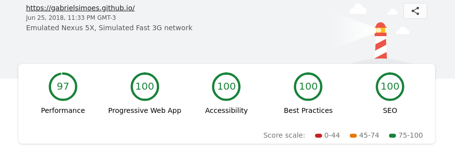

Generating a static blog with Gulp
Or how this website as created.
June 26, 2018
So, I’m starting my personal blog, and of course the first step was to actually build it. I had heard about things like Jekyll and Hugo, but I decided not to use them. Why? Well, using one of these tools isn’t nearly as fun and rewarding as building it from scratch.

Also, I wanted to do a couple more non-standard things, such as using the same datasource to build a reading/watching list and my PDF resume. So I thought those tools wouldn’t be aproppriate for that and I’d end up having to use two different tools where I could use just one.
¶ Tools and project structure
Now, let’s talk about what I used:
- Gulp for automating everything and wiring up the site generation. Gulp is also used to watch for changes while developing.
- Pug templating engine for creating the html structure.
- SCSS to write CSS smartly.
- markdown-it for generating html from my markdown notes and articles. Also, a bunch of plugins to add support to code highlighting, latex, task lists, footnotes and heading anchors.
- highlight.js together with markdown-it.
- js-yaml to parse my YAML files with the information to generate the pages. puppeteer to generate the PDF CV.
- A bunch of minifying tools.
Project structure:
├── dist
├── node_modules
├── notes
│ ├── articles
│ ├── books
│ ├── talks
│ ├── books.yaml
│ ├── info.yaml
│ └── talks.yaml
├── src
│ ├── img
│ ├── js
│ ├── other
│ ├── pug
│ └── scss
├── gulpfile.js
└── package.json
The hardest part of the project was creating a custom gulp plugin that would keep a list of all the blog posts and their front-matter info while it generates the pages, so that it would be possible to later generate a page with all the blog posts.
If you are really interested into this, you should take a look at the gulpfile.js on the website source. But basically I’m using a function that creates a closured data object using js-yaml. This function returns a gulp plugin that does the following: every time a markdown file arrives through the stream, it generates a page using the pug template, appends the frontmatter to the data object and pushes the file down the stream.
¶ Generating the PDF Resume
The nicest part was using puppeteer to generate the PDF resume. It seemed like a hard thing to do, but turned out to be quite simple. I just had to write a custom CSS for printing and write a very simple gulp task (it doesn’t use streams though, but there is no need for that):
gulp.task('cv', function(callback) {
(async () => {
var browser = await puppeteer.launch({args: ['--no-sandbox', '--disable-setuid-sandbox']});
var page = await browser.newPage();
await page.goto('file://' + path.join(__dirname, 'dist/cv-page.html'), {waitUntil: 'networkidle2'});
await page.pdf({path: 'dist/cv.pdf', format: 'A4'});
await browser.close();
callback();
})();
});
¶ Deploying
GitHub pages makes this a little harder than it could be, but nothing that we can’t handle. I created a source branch on the repo, and used it as the main branch, leaving the master branch as a totally separate branch where I’d commit the built website.
Now, how to easily commit the contents of the dist folder to the branch? I used the gh-pages plugin, coupled with a simple gulp task:
gulp.task('deploy', function(callback) {
ghpages.publish('dist/', {
branch: 'master',
message: 'Update ' + new Date().toISOString()
}, callback);
});
¶ Closing thoughts
Finally, I used Lighthouse to find out potential improvements to the website and ended up implementing a a very simple Service Worker, which caches the static assets and front page. I simply followed existing guides on how to do that, particularly this one.
Plus some tweaks on the HTML files, and we got a really nice score:

I’m really happy with the result, especially since I learned a lot about how Gulp really works and how to write plugins for it. I improved my usage of Pug and SCSS, and also learned to use Chrome’s Puppeteer.